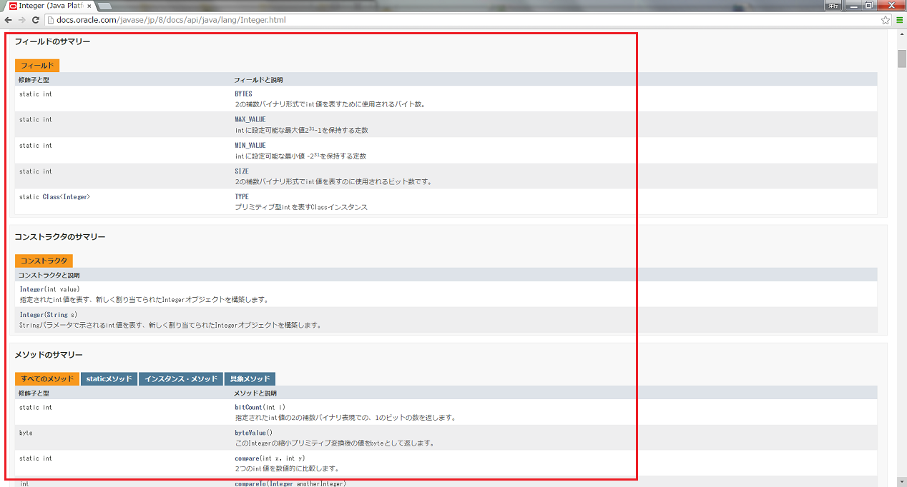

APIの調べ方
はじめに
このドキュメントを読むにあたっては、
- クラスとは何かを理解できている
- javaではAPIとして便利なクラス、メソッドが多数用意されている事が理解できている
必要があります。
さて、その用意されているメソッドについては
Java プラットフォーム API 仕様(通称：APIリファレンス、APIまたはJavaDoc)
というドキュメントを読むことで理解できます。
このドキュメントは、オンラインで見ることも、ダウンロードすることもできます。
最初の内は、非常によく参照することになるので、ダウンロードしておくと便利でしょう。
では以下のURLにアクセスしてドキュメントをダウンロードしてみましょう
http://www.oracle.com/technetwork/jp/java/java-sun-1440465-ja.html
図1 ダウンロードページ

図1の 赤丸のをクリックするとダウンロードすることが出来ます。
ダウンロードせずに、オンラインでドキュメントを見たい場合は、下記リンクから参照することが出来ます。
http://docs.oracle.com/javase/jp/8/api/
APIを調べる
ダウンロードしたファイルを解凍し、%解凍したディレクトリ%\index.htmlを開きます。
または、下記のオンラインドキュメントを表示しても同じ画面になります。
http://docs.oracle.com/javase/jp/8/api/
（説明ではオンラインドキュメントを使用していますが、上述のようにDLしたものと同じです）
図2 Javaドキュメントトップ

右の図の Java SE API と書かれたリンクをクリックします。
すると以下のような画面になります。
図4 API仕様トップ

この画面はフレームで表示されています。それぞれのフレームは以下のようになっています。
左上のフレームにはパッケージの一覧。
左下にはクラスの一覧。
右のフレームはメインの情報
目的のクラスを探す場合には左下のクラス一覧から探します。
パッケージがわかっている場合は、左上のパッケージ一覧から該当パッケージを選択すると、
左下のクラス一覧がパッケージに属するクラス一覧に変わるので探しやすくなります。
ここをブックマークに登録してもかまいませんが、
先ほどのJavaトップページには色々と有用な情報がありますので、
先ほどのページをブックマークに登録してもいいと思います。 |
実際にAPIを調べる
それでは、実際にAPIの調べ方をみてみましょう。
ここでは、なじみの深いであろう、Integerクラスを見てみます。
左下のクラス一覧からIntegerを探し、クリックすると
右のフレームにIntegerの情報が表示されます。
図5 Integerを探す

では順にIntegerクラスを見ていきます。
図6 階層表示

このクラスはObjectのサブクラスであるNumberクラスのサブクラスで、
ComparableインタフェースとSerializableインタフェースを実装していることがわかります。
図7 クラス宣言部

クラスの説明があり、intの処理時に役立つクラスである事がわかります。
また、intの値をオブジェクトとして使用する際に使えるクラスであることもわかります。
図8 概要

Integerクラスのフィールド、コンストラクタ、メソッドの概要と続きます。
メソッドはたくさんあり、全て見切れませんので、ここでは、
今までも何度か使用してきたであろう、parseIntメソッドの概要を見てみましょう。
図9 parseInt概要

一言でparseIntメソッドといっても二つあることがわかります。
- 引数がひとつのメソッドは、
文字列を10進数の整数値であるものとして解析しintの値を返してくれるstaticメソッドです。
- 引数がふたつのメソッドは、
第二引数を基数として解析し、intの値を返してくれるstaticメソッドですが、
ここでは横道にそれてしまうのでこれ以上は触れません。
これでparseIntメソッドがわかったと安心してはいけません。
メソッド名をクリックして、もっと詳しい情報を見てみましょう。
図10 parseInt詳細

さらに詳しい情報が記載されています。
ここで気をつけなくてはいけないのは発生する可能性のある例外についての記載で、
必要に応じてプログラムで処理しなくてはなりません。
次への第一歩
はじめに断っておくと、このAPI全てを覚える必要ありません。
調べながらプログラミングを行うのが普通です。
必要なクラスやメソッドについては何度も使用しているうちに覚えていきます。
今回はIntegerクラスを見ていきましたが、
Integerクラスはintの値に関する操作で使えそうだというのを先ほど知りました。
覚えていれば、必要な時にひょっとしたらIntegerクラスに便利なメソッドがあるのでは？
と予想する事が出来ます。
Javaでは、まず、自分がやりたい処理は、
きっと誰かが前に同じ事をやっていてAPIとして公開されているだろうと疑います。
そして、まずAPIを調べるという作業を行います。
何かにつけてAPIを調べる癖をつけておくのは使えるプログラマになるための第一歩です。
©日本インサイトテクノロジー株式会社